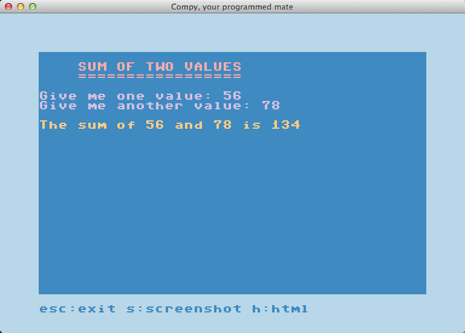

Challenges
Sum two values

variables#!/usr/bin/env python # -*- coding: utf-8 -*- import compy def main(scrn): scrn.clear_screen() scrn.printf() scrn.printf(' SUM OF TWO VALUES', color = 4) scrn.printf(' =================') scrn.printf() value_one = scrn.input("Give me one value: ", color = 8) value_two = scrn.input("Give me another value: ") sum_of_values = value_one + value_two scrn.printf() scrn.printf('The sum of {} and {} is {}'.format( value_one, value_two, sum_of_values), color=6) compy.run(main)